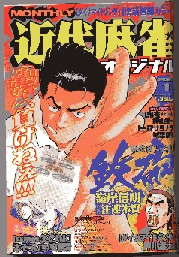
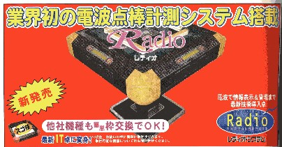
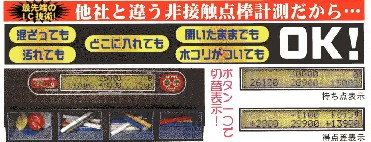
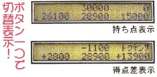

Mahjan talk 雀話。
（９１）すごいなぁ....
今月号の近代麻雀オリジナル

なにげなく自動卓の広告欄を見ていたら、オヤッと思う広告が目に付いた。

なんだろうと思って詳しく見た。
すると今までの得点表示器は金属接点方式であったが、この新製品は電波利用の無接点方式だという。PR文によると、無接点方式なのでいいことだらけのようだ。
現在普及している得点表示器は金属接点なので、点棒の両端に金属が巻いてある。或るメーカーの製品の場合は、点棒そのものが金属で出来ているので、結構重い。この新製品、その点がどうなってるか分からないが、点棒がかなり軽く出来ているらしい。

そして電波利用なので、点棒が箱の中で混ざってもＯＫ。箱のフタが開いていてもＯＫ（現在、普及しているタイプのものは、不可なものがある）。う〜む、こいつぁすごい（別にこのメーカーの回し者ではない（笑） ）。
また得失点表示も、常に４人分が一度に表示されている。聞くところによると、４人同時表示のタイプは他メーカーにもあるらしい。しかし電波利用の採用と相俟って、相乗効果をもたらしている。

なんとまぁ便利な表示器ができたもんだと、ほとほと感心した次第。